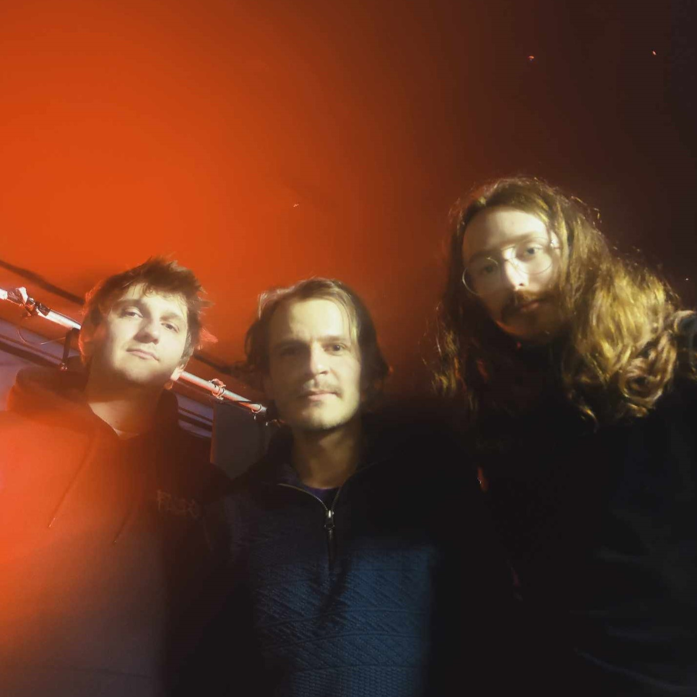
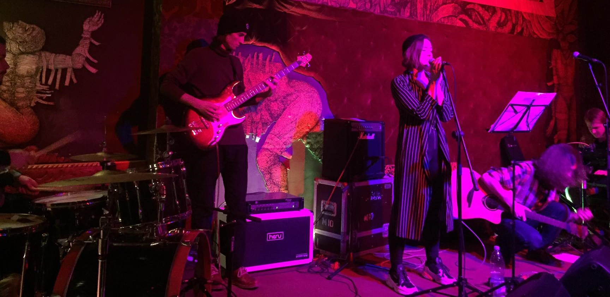

Solo
On soudcloud I post tracks created at different times with different intruments. Some more polished, some less. Stuff that's finished enough to be listened but doesn't fit elsewhere lands here.
Gzik
(2022-now) Current ongoing band. Created in rehersal rooms of music school Tony in Wrocław. Influenced by jazz and hip-hop. Sound is based on solid breakbeat, electric bass, electric pianos and synths. It's a mixture of looped fragments, tempo fluctuactions, improvisation and space effects. No solid recording yet, but we're going to studio later this year.
Uświt
(2020) First more real band I've been part of. We've written a whole set of songs, recorded 3 track demo, played one competition and one concert in a local club. It was going good, but right after our first full gig the pandemic started and that interrupted everything. Only thing we have left is this demo.
